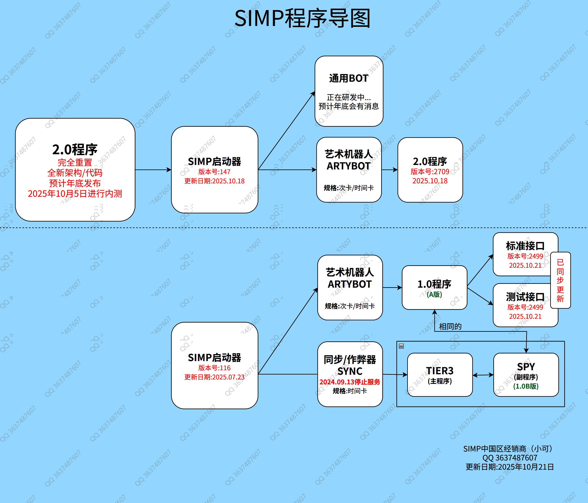

ARTYBOT 艺术机器人 - 更新日志

2025.10.21 测试/标准接口同步更新：B_2499
- 修复RU服的地图问题。
2025.10.18 测试/标准接口同步更新：B_2498
- 修复RU服的地图问题。
2025.10.16 测试/标准接口同步更新：B_2497
- 修复RU服的地图问题。
- 修复RU服无法开火的的问题。
2025.10.16 测试/标准接口同步更新：B_2496
- 修复WG服的地图问题。
2025.09.06 测试/标准接口同步更新：B_2495
- 修复已知BUG。
2025.09.06 测试/标准接口同步更新：B_2493
- 修复次数无限增加的问题。
2025.09.03 测试/标准接口同步更新：B_2485
- 已适配WOT2.0
- 修复已提交的BUG
2025.07.23 启动器更新：116
- 修复无法识别RU的进程问题。
2025.06.28 测试接口更新：B_2475
- 修复部分错误
2025.06.18 测试接口更新：B_2466
- 更改搜索敌人逻辑
- 修复崩溃不稳定问题
2025.06.14 测试接口更新：B_2447
- 支持接机
- 修复API错误
2025.06.07 测试接口更新：B_2394
- 修复部分错误问题
2025.06.04 测试接口更新：B_2365
- 添加异常检查接口
2025.05.28 测试接口更新：B_2333
- 修复部分错误问题
2025.05.27 测试接口更新：B_2324
- 修复部分错误问题
2025.05.26 测试接口更新：B_2298
- 修复部分错误问题
2025.05.24 测试接口更新：B_2294
- 修复崩溃问题
2025.05.22 测试接口更新：B_2281
- 修复低帧率问题
2025.05.21 测试接口更新：B_2265
- 修复崩溃及地图问题
2025.05.15 测试接口更新：B_2234
- 修复崩溃问题
2025.05.14 测试接口更新：B_2220
- 修复崩溃问题
2025.05.14 测试接口更新：B_2218
- 修复地图错误
2025.05.07 测试接口更新：B_2212
- 修复部分错误
- ...之前忘记记载了...